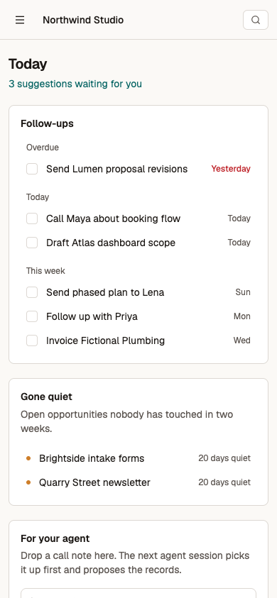
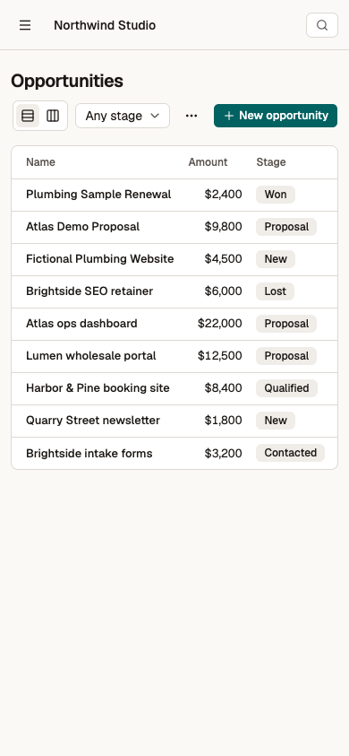
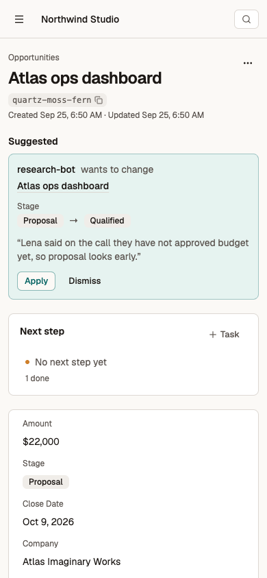
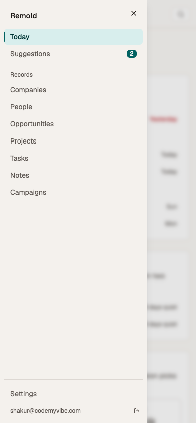

Remold cleanup: UX, visuals and code
2026-09-25 · scope: web app (src/) only · branch ux/cleanup-2026-09-25 · status: Fable pleased, awaiting your check
Your calls
- Merge the draft PR into
build/unified-remold-2026-09-24? It touches only the web app, not the backend.
- Money shows in US dollars (only the standard Amount field). Fine for the US price test; it needs a setting before the first non-US customer.
Done and proven
- Fable 5.1 said PLEASED in round 3, after passing all 14 items on its own checklist in round 2 (round 2, round 3). Its round-2 "not yet" was about money formatting, which is now fixed.
- New look: warm paper background, dark ink, one teal accent used once per screen. Same layout on phones (see the phone shots below).
- Board: each stage shows a count and a money total, and deals untouched for 14+ days get an amber "20 days quiet" flag. Other numbers keep their name, e.g. "19.5 hours".
- Record page: suggestions and the next step now sit above the history. You can tick the task done right there (the database shows done = true afterwards).
- Tables: no more "·" placeholders, and empty columns are hidden. Dates read "Sep 22, 2026" and amounts read "$4,500". Ticking the Done box on Tasks completes the task (checked in the database).
- New-record form: shows 4 fields plus "Show 2 more". The company list opens only when you click into it. A person created this way was saved with the right company (checked in the database).
- Search: the first result is highlighted before you press anything. Arrow keys move the highlight and Enter opens the record (tested).
- Suggestions: Apply changed the record in the database (Denver to Boulder). Applied items shrink to one line each.
- Settings: fields are renamed inline instead of in a browser popup (tested both ways). Agent permissions are now a grid with column headers, and the new-key panel has copy buttons.
- Bug fixed: the sidebar "New object" link lit up on Settings. It's gone; objects are created in Settings.
- Smaller code: the web app is 221 lines smaller (886 added, 1,107 removed), plus 52 fewer lines of CSS. Removed: 5 unused packages, leftover Vite template images, unused UI parts, and a stale committed build folder.
- Checks: typecheck, 73 tests (8 new, for the date, money and key helpers) and the production build all pass.
Before and after (same workspace, same 1853x801 window)
Left is before, right is after. Click any image to see it full size.
Extra after shots
Jobs board (hours, not dollars) · Jobs table · Record after ticking the next step · Task ticked in the table · Suggestion applied · New person with company picked · CSV menu
Phone (390px wide, after)




Detail
- How it ran. I worked in a separate copy (
../remold-ux) so the unfinished backend work in the main checkout stayed untouched. The app ran against a throwaway local backend (ops/identity/local.mjs, staging sign-in), and I signed in as you through the dedicated Chrome profile. The workspace ("Northwind Studio") uses fictional data. Two deals were backdated 20 days in that local database, only so the stale flag would show.
- Backend unchanged.
convex/ is untouched on this branch because of the release gates. Everything uses existing queries.
- Fable's process. Fable wrote the direction and a 14-item checklist first (round 1), then judged the result twice. The prompts are saved next to the replies. It ran as
claude-fable-5-1 through the Claude CLI on your Max plan. The CLI's usage record also shows a small Haiku helper call each round, even though I pointed its helper model at Sonnet. That is the CLI's own side task, not the review.
- Removed and why.
- Packages:
clsx and tailwind-merge (the cn package replaces both); @dnd-kit/sortable and @dnd-kit/utilities (never imported); next-themes (no theme switcher, and the toaster now pins light).
- Files:
src/assets/hero.png, src/assets/vite.svg and public/icons.svg (Vite template leftovers, never referenced); ui/separator.tsx and ui/tabs.tsx (unused).
- Unused exports in the dialog, dropdown, select, sheet, table and card primitives.
- The
.dark and chart color tokens, which nothing read.
dist/: an old build, still committed and older than the WorkOS switch. It is now ignored; deploys build fresh.
- Known limits (Fable, non-blocking).
- Table columns are picked from the first page of rows.
- "Next step" reads the two standard task links (Project, About). A third custom task link would still appear as its own panel.
- Currency is USD only.
- Not verified.
- Dragging a card on the board. That code only changed its error handling.
- The sign-in page after the change (I didn't sign out). Its before-shot was also overwritten by mistake, so there's no side-by-side.
- CSV import.
- A fresh-session check of the running app. Fable judged from screenshots and code; it did not use the app.
- Dev-only glitch seen. Twice, a browser tab left open while I copied many files into the dev server froze. Fresh loads of every page worked, and targeted reloads didn't reproduce it, so it looks like a hot-reload glitch in the local setup, not the app.
{kind=link}
{kind=link}
{kind=link}
{kind=link}
{kind=link}
{kind=link}
{kind=link}
{kind=link}
{kind=link}
{kind=link}
{kind=link}
{kind=link}
{kind=link}
{kind=link}
{kind=link}
{kind=link}
{kind=link}
{kind=link}
{kind=link}
{kind=link}
{kind=link}
{kind=link}
{kind=link}
{kind=link}
{kind=link}
{kind=link}
{kind=link}
{kind=link}
{kind=link}
{kind=link}
{kind=link}